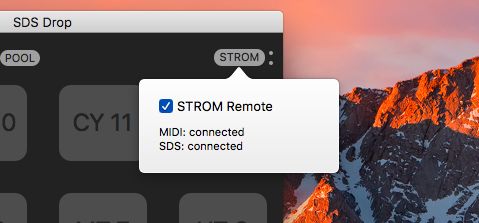

send a mail to support: sdsdropspprt@gmail.com
Stereo Drive is an upgrade available as In-App Purchase. It allows you to work with stereo sample files by splitting them up into 2 channels and transferring both. SDS Drop will help you work with them in your project. For now, please refer to this thread on Elektronauts:
Stereo DriveUsing SDS Drop is easy. Just drag an audio sample to one of the pads. The app will transfer the sample to your Rytm, load it to your active project, and make changes to your current kit so that the sample is ready to use immediately.
If you drag multiple samples, they will be loaded to the project, but not linked into your kit.
Sending samples with SDS Drop is very easy, but there is one thing you need to keep in mind. All samples which are sent to the Rytm will be stored on its +DRIVE internal storage. By default, and after restarting your Rytm, this is the INCOMING folder. If you want to send your sample to a different folder, you MUST choose a folder on your Rytm before sending the sample. Please refer to the official Rytm manual for how to do this.
Connect your Rytm Drum Computer to your Mac using a USB cable.
In the lower left of the main window, you can see the connection status to your Rytm. If everything is working well, you can see the number of free sample slots in the current Rytm project.
If there is red text indicating that there is no connection, or no response, try disconnecting your Rytm USB cable and connecting again. If this doesn't work, restart your Rytm drum computer.
SDS Drop gives you a few additional options for sample transfers.
If this option is enabled, the new sample will be loaded to the current kit's selected track, and the sample volume will be set to maximum, so that you can instantly use the new sample.
If this is enabled, the analog synth of the selected track will be disabled. If you want to hear only your sample in that track, enable this!
This option selects whether samples will be loaded to the current project. This only affects batch transfers (when you drag multiple samples to the app). If you drag a sample to a pad, and SMP is enabled, the sample is always loaded to the project so that it can be loaded into a track.
Choose whether SDS Drop should convert the sample to 48kHz / 16bit before transfer. If this is disabled, the sample is transferred using its original samplerate / bitdepth. If you want to send lo-fi samples more quickly, disable this option.
If this is enabled, after a successful transfer a copy of the track sound which includes a sample is created in the Rytm project's sound pool. SDS Drop will figure out the first unused pool slot, and copy the sound there. This is useful if you want to reuse a sample-based sound in other projects, or use it as sound-lock in other tracks.
You can also ctrl-click on a pad and choose to copy a sound to the pool from there.
SDS Drop can act as a relay for the iPad app STROM. Click the STROM button, then enable STROM remote.

Launch STROM on your iPad. Make sure your iPad and Mac are in the same local WIFI network. The two small dots next to the STROM button indicate whether your iPad is connected successfully.
You can then use all STROM functionality on your iPad including sample transfer and all performance features while your Rytm is connected to your Mac.